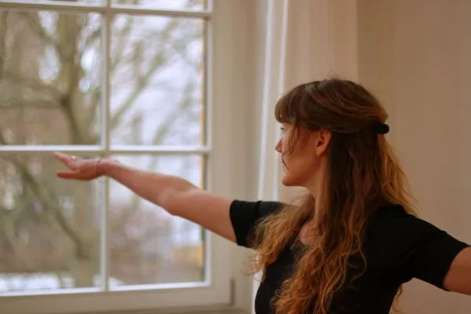

Yogaunterricht
In meinen Yogastunden erfährst du ein Zusammenspiel aus körperlicher Praxis, als auch geistiger Entspannung. Die Themen und Stilrichtungen variieren in jeder Stunde und werden stets individuell an die Teilnehmer*innen angepasst. Meine Yogastunden können von sanft bis sehr kraftvoll und fließend sein. Das wichtigste für mich ist, dass meine Schüler*innen mit mehr Entspannung und Energie aus den Stunden gehen und sich auf die nächsten Stunden freuen.